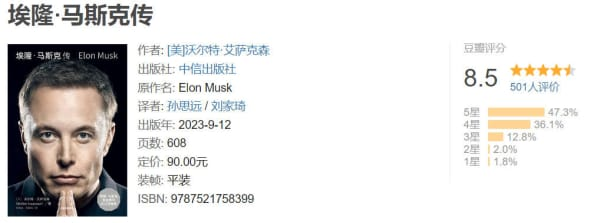

Vol.44：最近状态，新发现的好用的事物
Hello，好久不见，欢迎阅读我的周刊第 44 期。
最近好久没有更新了，一是因为工作比较忙，二是不知道该写什么，但既然保留了个人网站这个自留地，还是希望把它用起来，就想到什么就分享什么吧。
- 个人网站改版。刚好腾讯云要过期了，也不想续费了，所以决定把网站迁移到免费的 github 上。趁此机会把网站重新设计了一下，因为最近沉迷于各种真皮活页本，就以此为灵感设计了网站的首页，终于让这个网站看起来独特一些了，这次还是 Wang Pengfei 帮我开发，还加了 RSS 功能，欢迎订阅。
- 最近刚出版的马斯克的传记《埃隆·马斯克传》好像很火，这本书的作者也是《乔布斯传》的作者，可以找来看一下。

- 这周还发现了一个优质的中文播客，叫做纵横四海，是主播携隐 Melody 创作的。令我惊讶的是，她的每一期播客竟然都长达三四个小时，而且不是那种多人闲聊节目，而是个人独白，我觉得能做到坚持更新，并且以这样的质量来更新是很难得的。
https://www.xiaoyuzhoufm.com/podcast/62694abdb221dd5908417d1e

少看电视剧！开头说到今年没怎么更新，是因为没有时间，但我又仔细想了想，我好像有很多时间花在了看电视剧上，而且是一部电视剧几天就看完了。大多数电视剧并不好看，我还能看到大结局，也不知道是什么心理。
好看的天空。整理手机相册，发现今年有很多时候，天空都格外的好看，粉、紫、橘、红、蓝、白，简直就是一个天然的调色盘，让人忍不住要拍下来。
- 巴别阅读。一个独立开发者开发的英文外刊阅读 APP。我总是对这种独立开发者做出来的东西偏爱一些，因为我觉得他们做东西的初衷没有那么功利化，大多数人都是根据自身的需求出发去做的，所以不容易有乱七八糟的功能。
- 《谁杀了她》：东野圭吾的悬疑小说，在上下班的地铁上，花两天看完了，看得很顺畅，但是结尾有点突然，到最后我也在问谁杀了她。

订阅： 本站所有内容首发于 tangweijuan.com，同步更新于微信公众号"Afterwork Time"，欢迎扫描下方二维码订阅。

发布于:
2023/9/22